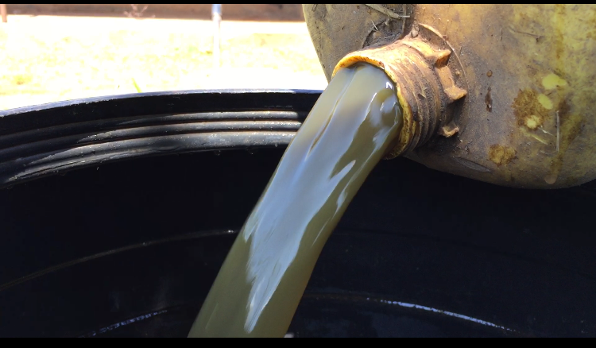

If you're facing challenges on your farm such as fertility issues, pest infestations, or crop diseases, we provide personalized consultation and support tailored to your needs. Our solutions address diverse soil types, persistent pests, and issues with plant growth and fruiting, aiming to enhance your farm's resilience and productivity. We specialize in treating banana diseases without uprooting, with treatments lasting just one month. Reach out to us today for expert guidance and custom solutions to transform your farming experience and elevate your success.